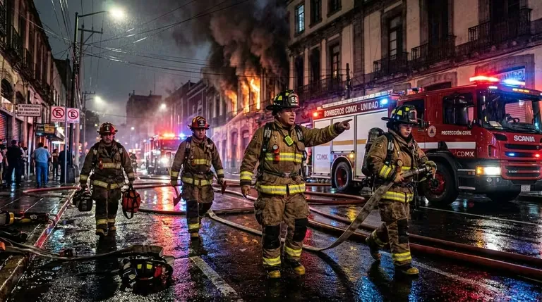

<!-- SECCIÓN 1: INTRODUCCIÓN -->
<section class="ol-art-section">
<h2>¿Qué es MESECI y qué lugar ocupa en el mercado mexicano?</h2>
<p>
En el sector de la protección contra incendios en México, pocas empresas combinan la amplitud de catálogo, la solidez normativa y la presencia metropolitana que distingue a MESECI. Con operaciones en Ciudad de México y Estado de México, esta empresa se ha posicionado como referencia obligada para edificios corporativos, complejos industriales, hospitales, centros comerciales y desarrollos de vivienda que necesitan cumplir con la normatividad mexicana e internacional en materia de seguridad contra incendios.
</p>
<p>
MESECI opera bajo un modelo de doble cobertura: su sede corporativa en la alcaldía Benito Juárez —zona sur de la Ciudad de México— y una sucursal en Tlalnepantla de Baz, en el Estado de México, para atender eficientemente el Área Metropolitana completa. Este posicionamiento geográfico le permite responder con rapidez tanto a proyectos nuevos como a servicios de mantenimiento y recarga en toda la región.
</p>
<p>
Su propuesta de valor se centra en tres ejes: producto certificado (NOM-154-SCFI para extintores y normativa NFPA para sistemas activos), asesoría técnica especializada por industria, y acompañamiento desde la ingeniería de detalle hasta la entrega operativa del sistema.
</p>
</section>
<!-- SECCIÓN 2: HISTORIA Y TRAYECTORIA -->
<section class="ol-art-section">
<h2>Historia y trayectoria: cómo se construyó la reputación de MESECI</h2>
<p>
MESECI nació con el objetivo de cubrir una necesidad clara en el mercado mexicano: ofrecer equipos contra incendios certificados bajo estándares tanto nacionales como internacionales, en un mercado donde la proliferación de extintores y sistemas sin respaldo normativo representaba un riesgo real para las empresas y sus ocupantes.
</p>
<p>
Con el tiempo, la empresa evolucionó de ser un distribuidor de extintores a convertirse en un proveedor integral de sistemas de protección contra incendios, incorporando líneas de rociadores automáticos, sistemas de hidrantes y mangueras, equipos de detección y alarma, y más recientemente, soluciones de supresión especial para riesgos específicos como salas de servidores, laboratorios y procesos industriales.
</p>
<p>
Esta trayectoria de ampliación de catálogo responde a la evolución del mercado: en México, la normatividad en materia de protección civil ha ido endureciéndose progresivamente, y con ella la exigencia por parte de clientes corporativos, aseguradoras y autoridades de que los equipos instalados cuenten con respaldo técnico verificable y certificaciones vigentes.
</p>
<div class="ol-art-callout" style="border-color: var(--blog-accent);">
<strong>Doble estándar certificado</strong>
<p>MESECI comercializa y distribuye equipos que cumplen simultáneamente con la normativa mexicana (NOM) y los estándares internacionales NFPA, lo que los hace aptos para proyectos con requerimientos de aseguradoras internacionales y auditores de cumplimiento global.</p>
</div>
</section>
<!-- SECCIÓN 3: NORMATIVIDAD -->
<section class="ol-art-section">
<h2>El marco normativo que rige el catálogo de MESECI</h2>
<p>
Entender el portafolio de MESECI requiere primero entender el ecosistema normativo en que opera. En México, la protección contra incendios está regulada por una combinación de normas oficiales mexicanas (NOM) y estándares internacionales adoptados como referencia técnica:
</p>
<h3>Normas Oficiales Mexicanas (NOM) aplicables</h3>
<p>
La <strong>NOM-154-SCFI</strong> regula los extintores portátiles: especifica los requisitos de fabricación, etiquetado, pruebas hidrostáticas y condiciones de recarga. Todo extintor comercializado legalmente en México debe cumplirla. MESECI garantiza que la totalidad de su línea de extintores lleva la certificación NOM-154 vigente, lo que incluye el sello de un organismo certificador acreditado por la SCFI.
</p>
<p>
La <strong>NOM-002-STPS</strong> establece las condiciones de seguridad en los centros de trabajo para la prevención y protección contra incendios. Aunque no certifica equipos directamente, define los parámetros bajo los cuales deben seleccionarse e instalarse los equipos, incluyendo densidades de descarga para rociadores y cobertura mínima de hidrantes en áreas de trabajo.
</p>
<h3>Estándares NFPA de referencia</h3>
<p>
La <strong>National Fire Protection Association (NFPA)</strong> publica más de 300 normas técnicas adoptadas en más de 100 países. Las más relevantes para el catálogo de MESECI son:
</p>
<div style="margin: 1rem 0;">
<span class="ol-art-norm-badge">NFPA 10</span>
<span class="ol-art-norm-badge">NFPA 13</span>
<span class="ol-art-norm-badge">NFPA 14</span>
<span class="ol-art-norm-badge">NFPA 20</span>
<span class="ol-art-norm-badge">NFPA 72</span>
<span class="ol-art-norm-badge">NFPA 101</span>
</div>
<ul>
<li><strong>NFPA 10:</strong> Extintores portátiles — selección, inspección, mantenimiento y recarga.</li>
<li><strong>NFPA 13:</strong> Instalación de sistemas de rociadores automáticos — el estándar de referencia global.</li>
<li><strong>NFPA 14:</strong> Sistemas de tubería vertical, mangueras y sistemas de tuberías para servicio de mangueras.</li>
<li><strong>NFPA 20:</strong> Instalación de bombas centrífugas estacionarias para protección contra incendios.</li>
<li><strong>NFPA 72:</strong> Código nacional de alarmas de incendio y señalización.</li>
<li><strong>NFPA 101:</strong> Código de seguridad humana — aplica a edificios de uso público, hospitales, hoteles.</li>
</ul>
<p>
La familiaridad técnica de MESECI con este marco normativo dual —nacional e internacional— es lo que le permite asesorar a proyectos complejos donde coexisten exigencias de protección civil local, aseguradoras internacionales y corporativos con políticas globales de seguridad.
</p>
</section>
<!-- SECCIÓN 4: CATÁLOGO DE PRODUCTOS -->
<section class="ol-art-section">
<figure class="ol-art-featured inline">
<picture>
<source srcset="../../img/equipos-contra-incendios/equipo-proteccion-contra-incendios-04.avif" type="image/avif">
<img src="../../img/equipos-contra-incendios/equipo-proteccion-contra-incendios-04.webp" alt="Equipo de protección contra incendios para entornos industriales" loading="lazy" decoding="async" width="768" height="429">
</picture>
<figcaption class="ol-art-featured-caption">Equipo de protección contra incendios para entornos industriales.</figcaption>
</figure>
<h2>Catálogo de productos: de extintores a sistemas integrales</h2>
<p>
El portafolio de MESECI cubre prácticamente todas las categorías de equipo activo de protección contra incendios. A diferencia de distribuidores especializados en una sola línea, MESECI funciona como ventanilla única para proyectos que requieren distintos tipos de equipo coordinados en un solo sistema.
</p>
<h3>Extintores portátiles certificados NOM-154</h3>
<p>
Los extintores son el producto más visible del catálogo y el que MESECI maneja con mayor profundidad de línea. La oferta incluye todos los agentes extintores reconocidos en la norma mexicana e internacional:
</p>
<table class="ol-art-spec-table">
<thead>
<tr>
<th>Tipo de agente</th>
<th>Clases de fuego</th>
<th>Aplicaciones típicas</th>
<th>Cert.</th>
</tr>
</thead>
<tbody>
<tr>
<td>Polvo químico seco (ABC)</td>
<td>A, B, C</td>
<td>Oficinas, comercios, bodegas, vehículos</td>
<td>NOM-154</td>
</tr>
<tr>
<td>CO₂ (dióxido de carbono)</td>
<td>B, C</td>
<td>Salas de cómputo, laboratorios, equipos eléctricos</td>
<td>NOM-154</td>
</tr>
<tr>
<td>Agua presurizada</td>
<td>A</td>
<td>Depósitos de papel, textiles, maderas</td>
<td>NOM-154</td>
</tr>
<tr>
<td>Espuma AFFF</td>
<td>A, B</td>
<td>Plantas de combustible, hangares</td>
<td>NOM-154 / NFPA 11</td>
</tr>
<tr>
<td>Agente limpio (HFC/FK)</td>
<td>A, B, C</td>
<td>CPD, salas de servidores, museos</td>
<td>NOM-154 / NFPA 2001</td>
</tr>
<tr>
<td>Clase K (acetato de potasio)</td>
<td>K</td>
<td>Cocinas comerciales, aceites vegetales y grasas animales</td>
<td>NOM-154 / NFPA 10</td>
</tr>
</tbody>
</table>
<p>
Para cada tipo, MESECI ofrece extintores en distintas capacidades: desde 1 kg o 1 L para uso portátil ligero, hasta unidades de 50 kg y 100 L para montaje fijo industrial. La selección correcta depende del riesgo específico del área, la clase de fuego probable y la distancia máxima de traslado (NFPA 10 y NOM-002-STPS establecen criterios de espaciado).
</p>
<h3>Sistemas de rociadores automáticos</h3>
<p>
Los rociadores automáticos (sprinklers) representan la primera línea de control de incendio en edificios modernos. MESECI distribuye rociadores de los principales fabricantes internacionales, en todas las configuraciones reconocidas por NFPA 13:
</p>
<ul>
<li><strong>Rociadores pendentes (pendent):</strong> instalación descendente, el más común en techos suspendidos.</li>
<li><strong>Rociadores montantes (upright):</strong> para espacios sin cielo raso, bodegas y almacenes con estantería abierta.</li>
<li><strong>Rociadores de respuesta rápida (QR):</strong> activación a menor temperatura, ideales en ocupaciones de alta ocupación humana.</li>
<li><strong>Rociadores de pared lateral (sidewall):</strong> para pasillos y espacios con restricción de plafón.</li>
<li><strong>Rociadores ESFR (Early Suppression Fast Response):</strong> para bodegas de alto rack con cargas de fuego elevadas.</li>
</ul>
<p>
La distribución de rociadores va acompañada del suministro de tuberías, accesorios, colgantes, válvulas de control y alarma, y bombas de incendio. MESECI puede suministrar el sistema completo o componentes específicos para complementar instalaciones existentes.
</p>
<h3>Sistemas de hidrantes y mangueras</h3>
<p>
Para el control de incendios de gran magnitud —donde los rociadores no tienen capacidad de caudal suficiente— los sistemas de hidrantes e hidrantes exteriores son indispensables. MESECI ofrece:
</p>
<ul>
<li>Hidrantes de columna húmeda y seca (barrel húmedo y seco)</li>
<li>Hidrantes de pared (gabinetes tipo I, II y III según NFPA 14)</li>
<li>Mangueras de ataque de 38 mm (1½") y 65 mm (2½") con recubrimiento poliéster y goma</li>
<li>Boquillas de neblina, chorro recto y combinadas</li>
<li>Gabinetes contraincendios (GCI) con vidrio o puerta metálica, en versiones superficiales, empotrables y semiempotradas</li>
<li>Uniones Siamesas para conexión de carros bomba externos</li>
<li>Válvulas de compuerta, mariposa y cheque para la red de distribución</li>
</ul>
<h3>Sistemas de detección y alarma</h3>
<p>
La detección temprana es determinante para minimizar daños y salvar vidas. El portafolio de MESECI en este rubro incluye:
</p>
<ul>
<li>Detectores de humo (iónicos y fotoeléctricos) — para detectar humo antes de que el fuego escale.</li>
<li>Detectores de calor (termovelocimétricos y termofijos) — para áreas donde el humo es parte normal del proceso.</li>
<li>Detectores de llama (UV/IR) — para riesgos de combustión rápida: combustibles, pintura, solventes.</li>
<li>Detectores de gas combustible — para plantas con riesgo de fuga de gas.</li>
<li>Paneles de control convencional y analógico/direccionable.</li>
<li>Dispositivos de notificación: sirenas, estrobos, altavoces para evacuación.</li>
<li>Estaciones manuales de activación (pull stations).</li>
</ul>
<h3>Sistemas de supresión especial</h3>
<p>
Para riesgos específicos que no pueden controlarse con agua —como centros de datos, archivos, subestaciones eléctricas o procesos industriales con solventes— MESECI distribuye sistemas de supresión total por inundación con agentes limpios y CO₂:
</p>
<ul>
<li>Sistemas de agente limpio FM-200 (HFC-227ea) y Novec 1230 (FK-5-1-12)</li>
<li>Sistemas de inundación total con CO₂</li>
<li>Sistemas de polvo seco para riesgos industriales específicos</li>
<li>Sistemas de espuma de baja, media y alta expansión para plantas de combustibles</li>
</ul>
</section>
<!-- SECCIÓN 5: SERVICIOS TÉCNICOS -->
<section class="ol-art-section">
<h2>Servicios técnicos: más allá de la venta de equipo</h2>
<p>
El cumplimiento normativo en materia de protección contra incendios no termina con la compra del equipo. La NOM-154-SCFI, el NFPA 10 y la normativa de protección civil local establecen obligaciones periódicas de mantenimiento, inspección y recarga que las empresas deben documentar. MESECI brinda una gama completa de servicios técnicos especializados:
</p>
<h3>Recarga y mantenimiento de extintores</h3>
<p>
El servicio de recarga incluye la limpieza interior del cilindro, reemplazo del agente extintor, prueba de válvula y sello, y reemplazo de etiquetas con la fecha de mantenimiento. Para extintores de CO₂ y agente limpio, el proceso también incluye la verificación del peso del agente y la prueba de la válvula sifón.
</p>
<p>
Según NOM-154-SCFI y NFPA 10, los extintores deben inspeccionarse mensualmente (usuario), recargarse anualmente (empresa certificada) y someterse a prueba hidrostática cada 5 o 12 años según el tipo de cilindro. MESECI lleva el registro y emite los documentos necesarios para auditorías de protección civil.
</p>
<h3>Prueba hidrostática de cilindros</h3>
<p>
La prueba hidrostática verifica la integridad estructural del cilindro presurizando el recipiente a 1.5 veces su presión de trabajo y manteniendo esa presión durante un período determinado. Es obligatoria para cilindros de acero cada 5 años y para cilindros de aluminio cada 12 años (NOM-154-SCFI). MESECI cuenta con equipos de prueba en su taller para realizar esta verificación con documentación completa.
</p>
<h3>Inspección y mantenimiento de sistemas PCI</h3>
<p>
Para sistemas de rociadores, hidrantes y detección, MESECI ofrece contratos de inspección periódica que cubren:
</p>
<ul>
<li>Verificación visual de rociadores (corrosión, daños, obstrucciones)</li>
<li>Prueba de flujo de agua en sistemas húmedos</li>
<li>Inspección de válvulas de control y alarma</li>
<li>Prueba de bombas contraincendios (semanal, mensual, anual según NFPA 25)</li>
<li>Prueba funcional de detectores y paneles de alarma</li>
<li>Verificación de presión en redes de hidrantes</li>
</ul>
<h3>Asesoría en proyecto y cumplimiento normativo</h3>
<p>
Para proyectos nuevos o remodelaciones, MESECI ofrece revisión de planos, validación del diseño contra NFPA 13/14 y apoyo en la gestión de permisos con autoridades de protección civil. Este servicio es especialmente valorado por desarrolladores inmobiliarios y contratistas generales que necesitan validar su diseño antes de la instalación.
</p>
</section>
<!-- SECCIÓN 6: SECTORES ATENDIDOS -->
<section class="ol-art-section">
<h2>Sectores y tipos de proyecto que atiende MESECI</h2>
<p>
La diversidad del catálogo de MESECI le permite atender una gama amplia de sectores, cada uno con sus propios requerimientos normativos y tipos de riesgo:
</p>
<h3>Edificios corporativos y oficinas</h3>
<p>
Los edificios de oficinas en zonas como Santa Fe, Polanco, Insurgentes o el Corredor Reforma requieren sistemas de rociadores por piso, detección analógica integrada y extintores por área según tipo de ocupación. El cumplimiento con NFPA 101 (Código de Seguridad Humana) es frecuentemente requerido por arrendatarios corporativos multinacionales.
</p>
<h3>Industria y manufactura</h3>
<p>
Las plantas industriales en el Estado de México —Tlalnepantla, Cuautitlán, Naucalpan— presentan riesgos de fuego de clase B (líquidos inflamables) y clase C (equipos eléctricos). Aquí, MESECI suministra extintores industriales de mayor capacidad, monitores portátiles y sistemas de detección de gas con integración al panel central.
</p>
<h3>Hospitales y centros de salud</h3>
<p>
Los hospitales son las ocupaciones de mayor exigencia en NFPA 101. Requieren sistemas de rociadores húmedos, detección analógica full-addressable, válvulas de control por zona, y procedimientos documentados de prueba. MESECI atiende este sector con protocolos específicos para no interrumpir operaciones críticas durante las inspecciones.
</p>
<h3>Centros comerciales y retail</h3>
<p>
Plazas y centros comerciales requieren diseños de rociadores para densidades de almacenamiento variables, sistemas de hidrantes en estacionamientos y detección en áreas comunes. La estética importa: gabinetes de diseño arquitectónico y detectores discretos forman parte del catálogo para este segmento.
</p>
<h3>Hoteles y desarrollos habitacionales</h3>
<p>
El Reglamento de Construcciones del DF y la normativa del Estado de México exigen sistemas de rociadores en edificios habitacionales de cierta altura. MESECI ha participado en proyectos de vivienda vertical y hotelería en la CDMX, suministrando sistemas húmedos y semiempotrados de rociadores con válvulas de piso independientes.
</p>
<h3>Centros de datos y telecomunicaciones</h3>
<p>
Los CPD (centros de procesamiento de datos) requieren supresión con agente limpio para proteger equipos sin daño por agua. MESECI distribuye sistemas de Novec 1230 y FM-200 para este segmento, con detección muy sensible (humo de doble polaridad) para activación temprana.
</p>
</section>
<!-- SECCIÓN 7: COBERTURA GEOGRÁFICA -->
<section class="ol-art-section">
<h2>Cobertura geográfica: Ciudad de México y Área Metropolitana</h2>
<p>
Con dos instalaciones estratégicamente ubicadas, MESECI cubre eficientemente las principales zonas industriales y corporativas del Valle de México:
</p>
<h3>Sede CDMX — Benito Juárez</h3>
<p>
La sede principal en Insurgentes Sur 1650, colonia Florida, Benito Juárez, permite atender rápidamente a clientes en Insurgentes, Santa Fe, Pedregal, Coyoacán, Xochimilco, Iztapalapa y zonas aledañas. La ubicación también facilita el acceso al corredor corporativo de Insurgentes, uno de los de mayor densidad de edificios de oficinas en la ciudad.
</p>
<h3>Sucursal Estado de México — Tlalnepantla de Baz</h3>
<p>
La sucursal en Calle Benito Juárez 5B, San Lucas Tepetlacalco, Tlalnepantla, cubre el corredor industrial norte del Área Metropolitana: Tlalnepantla, Naucalpan, Cuautitlán Izcalli, Tultitlán y Ecatepec. Esta zona concentra una alta densidad de plantas industriales, bodegas logísticas y parques manufactureros que son clientes naturales de los sistemas PCI de mayor escala.
</p>
<h3>Proyectos en estados fuera del AMBA</h3>
<p>
Para proyectos de gran escala fuera de la Zona Metropolitana del Valle de México, MESECI puede coordinar el suministro y la asesoría técnica con instaladores locales, funcionando como proveedor del equipo certificado y soporte técnico remoto durante la instalación.
</p>
</section>
<!-- SECCIÓN 8: DIFERENCIADORES -->
<section class="ol-art-section">
<h2>Diferenciadores de MESECI frente a otros proveedores del sector</h2>
<p>
El mercado mexicano de equipos contra incendios tiene decenas de distribuidores. ¿Qué distingue a MESECI en ese entorno competitivo?
</p>
<h3>1. Doble certificación como diferenciador comercial</h3>
<p>
La mayoría de los distribuidores medianos en México trabajan únicamente con NOM-154. MESECI ha construido su oferta sobre la base de cumplir simultáneamente con NOM y NFPA, lo que resulta decisivo para clientes con:
</p>
<ul>
<li>Seguros de propiedad con aseguradoras internacionales (FM Global, Zurich, AXA) que exigen NFPA en sus requisitos de suscripción.</li>
<li>Políticas corporativas globales de seguridad que referencian estándares NFPA.</li>
<li>Auditorías de compliance de casas matrices extranjeras.</li>
</ul>
<h3>2. Capacidad de proyecto integral</h3>
<p>
En lugar de vender extintores por un lado y sistemas de rociadores por otro, MESECI puede suministrar la totalidad del equipo activo de protección contra incendios para un proyecto, simplificando la cadena de suministro del cliente y reduciendo el riesgo de incompatibilidades entre sistemas de diferentes proveedores.
</p>
<h3>3. Documentación técnica completa</h3>
<p>
Cada equipo entregado viene acompañado de su certificado de conformidad, hoja técnica, manual de operación y, para sistemas, la memoria de cálculo hidráulico cuando aplica. Esta documentación es indispensable para trámites de protección civil, auditorías de aseguradoras y verificaciones municipales.
</p>
<h3>4. Servicio postventa estructurado</h3>
<p>
MESECI mantiene contratos de mantenimiento preventivo y correctivo para los sistemas que distribuye, con calendario de visitas documentado y generación de reportes de inspección firmados por técnico certificado. Este servicio es crítico para clientes que deben demostrar el cumplimiento continuo de la normativa ante las autoridades de protección civil.
</p>
</section>
<!-- SECCIÓN 9: PROCESO DE COMPRA -->
<section class="ol-art-section">
<h2>¿Cómo es el proceso de compra o contratación con MESECI?</h2>
<p>
Para clientes nuevos, el proceso típico de trabajo con MESECI sigue esta secuencia:
</p>
<h3>Paso 1: Contacto inicial y diagnóstico de necesidades</h3>
<p>
El cliente contacta a MESECI por teléfono, correo o visita a cualquiera de sus dos instalaciones. En esta etapa se define el tipo de proyecto: compra directa de extintores, suministro de equipos para sistema PCI nuevo, o servicio de mantenimiento de sistema existente.
</p>
<h3>Paso 2: Visita técnica (para sistemas PCI)</h3>
<p>
Para proyectos de sistemas de rociadores, hidrantes o supresión especial, un técnico de MESECI realiza una visita al sitio para evaluar el riesgo, tomar medidas y revisar los planos existentes. Con esta información se elabora la propuesta técnica y comercial.
</p>
<h3>Paso 3: Propuesta técnica-comercial</h3>
<p>
La propuesta incluye especificación técnica del equipo propuesto, listado de materiales con referencias de fabricante, y condiciones comerciales. Para sistemas PCI, puede incluir memoria de cálculo hidráulico básica o referencia a la norma aplicable.
</p>
<h3>Paso 4: Suministro o instalación</h3>
<p>
MESECI suministra el equipo directamente para instalación por el contratista del cliente, o coordina la instalación con instaladores asociados según el alcance del proyecto. El suministro incluye empaque adecuado para transporte y entrega en sitio o en sus instalaciones.
</p>
<h3>Paso 5: Documentación y entrega</h3>
<p>
Con la entrega del equipo se proporciona la documentación técnica completa: certificados NOM, fichas técnicas, manuales y, para extintores recargados, el sello y etiqueta de fecha de mantenimiento. Esta documentación es la que el cliente presenta ante protección civil o su aseguradora.
</p>
</section>
<!-- SECCIÓN 10: CONSIDERACIONES DE COMPRA -->
<section class="ol-art-section">
<h2>Consideraciones clave al elegir un proveedor de equipos contra incendios</h2>
<p>
El mercado mexicano tiene proveedores de todos los niveles. Antes de contratar, conviene verificar:
</p>
<ul>
<li><strong>Certificación NOM-154 vigente:</strong> El número de certificado debe aparecer en la etiqueta del extintor. Solicite el certificado emitido por el organismo certificador.</li>
<li><strong>Capacidad de prueba hidrostática:</strong> No todos los talleres tienen el equipo para realizar pruebas hidrostáticas certificadas. MESECI cuenta con esta capacidad en sus instalaciones.</li>
<li><strong>Referencia de proyectos anteriores:</strong> Para sistemas PCI de mediana y gran escala, solicite referencias de proyectos similares completados.</li>
<li><strong>Soporte técnico postventa:</strong> El cumplimiento normativo es continuo, no puntual. Un proveedor con contratos de mantenimiento estructurados reduce el riesgo de incumplimiento en auditorías futuras.</li>
<li><strong>Capacidad de suministro de refacciones:</strong> Para sistemas de rociadores o detección, la disponibilidad de refacciones del mismo fabricante a lo largo del tiempo es crítica para el mantenimiento.</li>
</ul>
<div class="ol-art-callout" style="border-color: var(--blog-accent);">
<strong>Nota sobre precios y cotización</strong>
<p>Los precios de los equipos contra incendios varían según fabricante, capacidad, certificación y volumen de compra. MESECI trabaja por cotización directa —sin listas de precios públicas— para poder adaptar la propuesta al proyecto específico del cliente.</p>
</div>
</section>
<!-- SECCIÓN 11: COMPARATIVA DE EXTINTORES -->
<section class="ol-art-section">
<h2>Guía rápida: selección de extintor por tipo de riesgo</h2>
<p>
Una de las preguntas más frecuentes que recibe MESECI de sus clientes es qué tipo de extintor corresponde a cada área. Esta tabla resume los criterios básicos de selección según NOM-002-STPS y NFPA 10:
</p>
<table class="ol-art-spec-table">
<thead>
<tr>
<th>Tipo de área</th>
<th>Riesgo principal</th>
<th>Agente recomendado</th>
<th>Capacidad mínima sugerida</th>
</tr>
</thead>
<tbody>
<tr>
<td>Oficinas administrativas</td>
<td>Clase A (papel, muebles)</td>
<td>Polvo ABC o agua</td>
<td>4.5 kg / 6 L</td>
</tr>
<tr>
<td>Salas de cómputo / CPD</td>
<td>Clase C (equipos eléctricos)</td>
<td>CO₂ o agente limpio</td>
<td>5 kg CO₂</td>
</tr>
<tr>
<td>Almacén de líquidos inflamables</td>
<td>Clase B (solventes, combustibles)</td>
<td>Polvo ABC o espuma AFFF</td>
<td>9 kg mínimo</td>
</tr>
<tr>
<td>Cocina comercial</td>
<td>Clase K (aceites y grasas)</td>
<td>Acetato de potasio (Clase K)</td>
<td>6 L</td>
</tr>
<tr>
<td>Subestación eléctrica</td>
<td>Clase C (equipos eléctricos)</td>
<td>CO₂ o polvo BC</td>
<td>10 kg CO₂</td>
</tr>
<tr>
<td>Planta de manufactura metalmecánica</td>
<td>Clase D (metales combustibles)</td>
<td>Polvo seco especial Clase D</td>
<td>Per diseño</td>
</tr>
</tbody>
</table>
<p>
Esta tabla es orientativa. La selección definitiva debe hacerla un técnico certificado que conozca el tipo y cantidad de combustible, el área protegida, la distancia máxima de acceso y los requerimientos específicos de la aseguradora.
</p>
</section>
<!-- TARJETA DE CONTACTO -->
<div class="ol-art-contact-card">
<h3>Contacto MESECI — Equipos Contra Incendios</h3>
<div class="ol-art-contact-grid">
<div class="ol-art-contact-item">
<strong>Sede CDMX</strong>
<span>Av. Insurgentes Sur 1650, Piso 1<br>Col. Florida, Benito Juárez<br>C.P. 01030, Ciudad de México</span>
</div>
<div class="ol-art-contact-item">
<strong>Sucursal Estado de México</strong>
<span>C. Benito Juárez 5B<br>San Lucas Tepetlacalco<br>C.P. 54055, Tlalnepantla de Baz</span>
</div>
<div class="ol-art-contact-item">
<strong>Teléfonos</strong>
<a href="tel:+525534934812">55 3493 4812</a><br>
<a href="tel:+525553783641">55 5378 3641</a>
</div>
<div class="ol-art-contact-item">
<strong>Correo electrónico</strong>
<a href="mailto:contacto@meseci.com.mx">contacto@meseci.com.mx</a>
</div>
<div class="ol-art-contact-item">
<strong>Sitio web</strong>
<a href="https://meseci.com.mx" target="_blank" rel="noopener">meseci.com.mx</a>
</div>
<div class="ol-art-contact-item">
<strong>Horario de atención</strong>
<span>Lunes a Viernes: 9:00 – 18:00 hrs</span>
</div>
</div>
</div>
<!-- SECCIÓN FINAL -->
<section class="ol-art-section">
<h2>Conclusión: MESECI como partner de largo plazo en protección contra incendios</h2>
<p>
La elección de un proveedor de equipos contra incendios no es una decisión que se tome por precio únicamente. La certificación del equipo, la capacidad técnica del proveedor, el servicio postventa y la documentación que respalda el cumplimiento normativo son factores que impactan directamente en la exposición al riesgo de la empresa, en la validez de la póliza de seguro y en el resultado de una inspección de protección civil.
</p>
<p>
MESECI ha construido su posición en el mercado metropolitano de México precisamente sobre estos factores: equipo certificado NOM y NFPA, catálogo integral de primera y segunda línea de protección, servicios técnicos documentados y cobertura en las principales zonas industriales y corporativas del Valle de México.
</p>
<p>
Para empresas que buscan un proveedor con quien construir una relación de largo plazo —no solo una compra puntual— MESECI representa una opción sólida, respaldada por sus dos décadas de operación en uno de los mercados más exigentes del país.
</p>
</section>
<!-- SHARE + AUTHOR -->
<div class="ol-art-share">
<span class="ol-art-share-label">Compartir artículo:</span>
<a href="https://twitter.com/intent/tweet?url=https://origenlab.com/blog/meseci-equipo-contra-incendios-nom-nfpa/&text=MESECI+–+Equipo+Contra+Incendios+Certificado+NOM+y+NFPA+en+CDMX" target="_blank" rel="noopener" class="ol-art-share-btn" aria-label="Compartir en Twitter">
<svg width="18" height="18" viewBox="0 0 24 24" fill="currentColor" aria-hidden="true" focusable="false"><path d="M18.244 2.25h3.308l-7.227 8.26 8.502 11.24H16.17l-5.214-6.817L4.99 21.75H1.68l7.73-8.835L1.254 2.25H8.08l4.713 6.231zm-1.161 17.52h1.833L7.084 4.126H5.117z"/></svg>
Twitter / X
</a>
<a href="https://www.linkedin.com/sharing/share-offsite/?url=https://origenlab.com/blog/meseci-equipo-contra-incendios-nom-nfpa/" target="_blank" rel="noopener" class="ol-art-share-btn" aria-label="Compartir en LinkedIn">
<svg width="18" height="18" viewBox="0 0 24 24" fill="currentColor" aria-hidden="true" focusable="false"><path d="M20.447 20.452h-3.554v-5.569c0-1.328-.027-3.037-1.852-3.037-1.853 0-2.136 1.445-2.136 2.939v5.667H9.351V9h3.414v1.561h.046c.477-.9 1.637-1.85 3.37-1.85 3.601 0 4.267 2.37 4.267 5.455v6.286zM5.337 7.433c-1.144 0-2.063-.926-2.063-2.065 0-1.138.92-2.063 2.063-2.063 1.14 0 2.064.925 2.064 2.063 0 1.139-.925 2.065-2.064 2.065zm1.782 13.019H3.555V9h3.564v11.452zM22.225 0H1.771C.792 0 0 .774 0 1.729v20.542C0 23.227.792 24 1.771 24h20.451C23.2 24 24 23.227 24 22.271V1.729C24 .774 23.2 0 22.222 0h.003z"/></svg>
LinkedIn
</a>
<a href="https://api.whatsapp.com/send?text=MESECI+–+Equipo+Contra+Incendios+Certificado+NOM+y+NFPA+en+CDMX+https://origenlab.com/blog/meseci-equipo-contra-incendios-nom-nfpa/" target="_blank" rel="noopener" class="ol-art-share-btn" aria-label="Compartir en WhatsApp">
<svg width="18" height="18" viewBox="0 0 24 24" fill="currentColor" aria-hidden="true" focusable="false"><path d="M17.472 14.382c-.297-.149-1.758-.867-2.03-.967-.273-.099-.471-.148-.67.15-.197.297-.767.966-.94 1.164-.173.199-.347.223-.644.075-.297-.15-1.255-.463-2.39-1.475-.883-.788-1.48-1.761-1.653-2.059-.173-.297-.018-.458.13-.606.134-.133.298-.347.446-.52.149-.174.198-.298.298-.497.099-.198.05-.371-.025-.52-.075-.149-.669-1.612-.916-2.207-.242-.579-.487-.5-.669-.51-.173-.008-.371-.01-.57-.01-.198 0-.52.074-.792.372-.272.297-1.04 1.016-1.04 2.479 0 1.462 1.065 2.875 1.213 3.074.149.198 2.096 3.2 5.077 4.487.709.306 1.262.489 1.694.625.712.227 1.36.195 1.871.118.571-.085 1.758-.719 2.006-1.413.248-.694.248-1.289.173-1.413-.074-.124-.272-.198-.57-.347m-5.421 7.403h-.004a9.87 9.87 0 01-5.031-1.378l-.361-.214-3.741.982.998-3.648-.235-.374a9.86 9.86 0 01-1.51-5.26c.001-5.45 4.436-9.884 9.888-9.884 2.64 0 5.122 1.03 6.988 2.898a9.825 9.825 0 012.893 6.994c-.003 5.45-4.437 9.884-9.885 9.884m8.413-18.297A11.815 11.815 0 0012.05 0C5.495 0 .16 5.335.157 11.892c0 2.096.547 4.142 1.588 5.945L.057 24l6.305-1.654a11.882 11.882 0 005.683 1.448h.005c6.554 0 11.89-5.335 11.893-11.893a11.821 11.821 0 00-3.48-8.413z"/></svg>
WhatsApp
</a>
</div>
<div class="ol-art-author-card">
<div class="ol-art-author-avatar" aria-hidden="true">OL</div>
<div class="ol-art-author-info">
<strong class="ol-art-author-name">OrigenLab Editorial</strong>
<p class="ol-art-author-bio">Agencia mexicana de desarrollo web especializada en sitios para empresas del sector industrial, seguridad y B2B. Creamos plataformas digitales que generan resultados.</p>
</div>
</div>